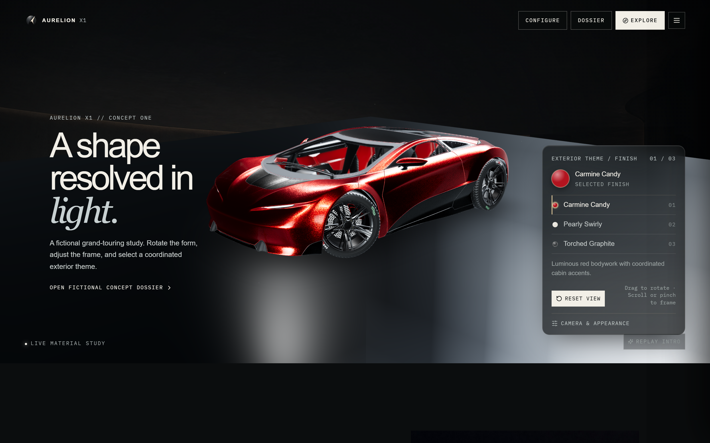
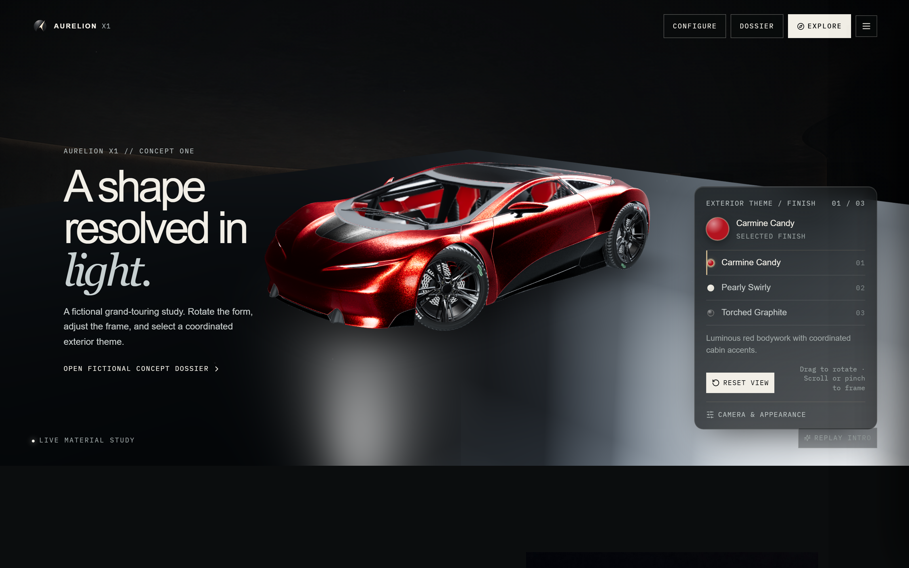
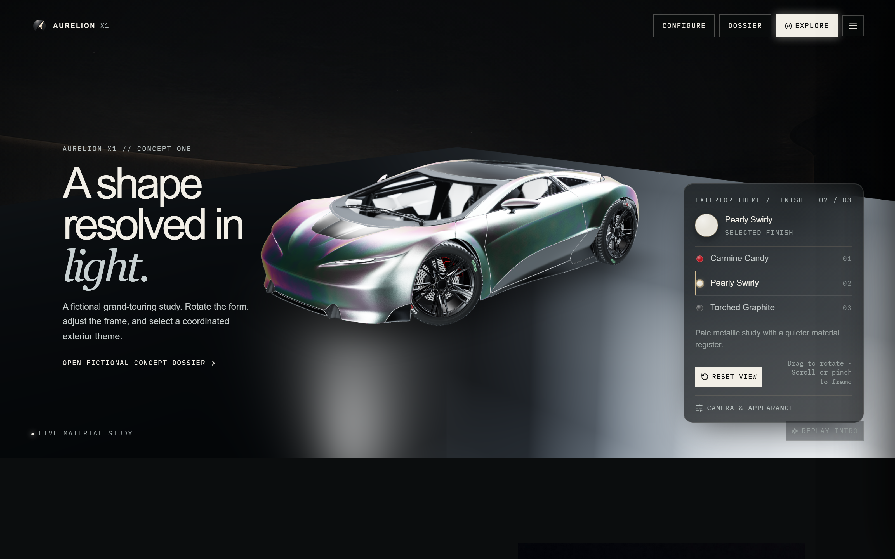
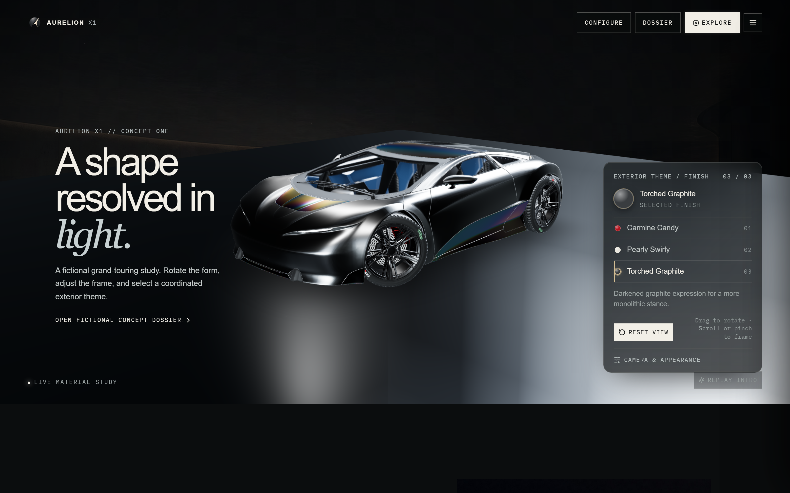
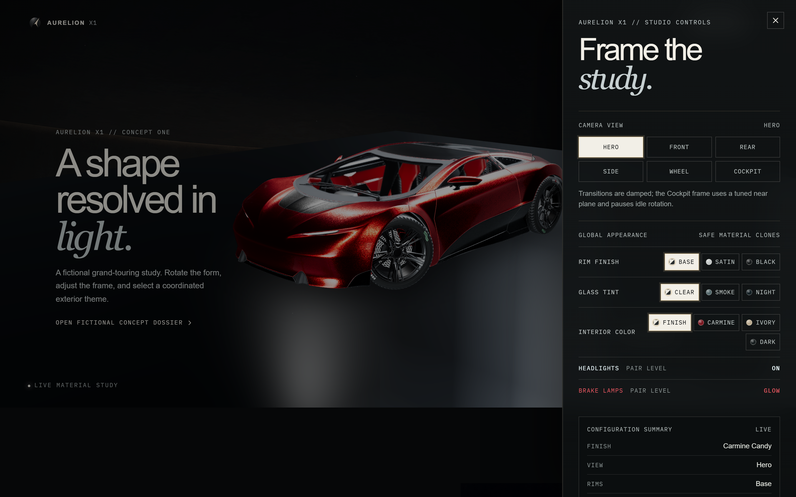
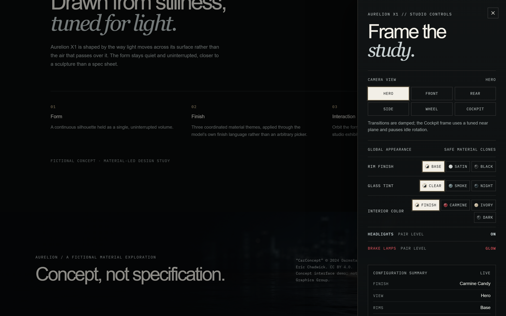

A fictional concept-car reveal you can actually touch: a real 3D vehicle in the browser you can rotate, relight, repaint, and explore. No download, no account, no plugin.
The first thing you see on this page is the real product.
Drag to rotate the car, switch between finishes, and frame it from any angle. It is running live, right here, the same build that ships to production.
AURELION X1 is a fictional concept-car reveal you can actually touch. Instead of a gallery of rendered stills, it drops a real 3D vehicle into the browser and lets anyone rotate it, relight it, change its paint, and explore how it is engineered, with no download, no account, no plugin.
I built it to answer a simple question: what does a modern product page feel like when the product is live rather than photographed? A car is the perfect test case. It is something people already know how to evaluate by walking around it, and it rewards the kind of material detail (deep candy paint, brushed rims, tinted glass, lights that actually switch on) that flat images flatten out.
The result is a functioning configurator, not a mock-up. Everything you interact with is driven by a real 3D model and real materials, wrapped in a calm, editorial interface that stays out of the way.

The default “hero” composition: a front three-quarter view the experience always returns to.
Most product reveals ask you to trust a photograph. But the things that make a physical product feel premium (how light travels across a surface, how a color shifts as it turns, how the proportions read from the rear versus the side) are exactly the things a fixed image can't show.
The questions I wanted a visitor to be able to answer for themselves:
A static page can only tell you. An interactive one lets you check.
I designed and built the experience frontend-first: the look, the motion, and the interaction model came before anything else, because on a product like this the experience is the product.
The build was AI-assisted. I used Claude Design to shape the visual direction and Claude Code to implement it, moving in small, reviewable steps.
AI accelerated the implementation, but I stayed responsible for the product direction, the design calls, the testing, and the final quality bar. Every interaction was something I decided on, tried in the real app, and either kept or sent back.
A concrete example of that oversight: before building the interface, I had the actual 3D asset inspected and validated (its materials, its hierarchy, its orientation, and its camera framing) and kept that validation report in the repo. The interface is built on what the model actually contains, not on assumptions about it. That is why the finishes and lighting are real rather than faked.
A functioning configurator built around real materials, real cameras, and a real 3D model, with an interface anyone can drive.
Carmine Candy, Pearly Swirly, and Torched Graphite: genuine finish variants read from the 3D model, not color overlays.
Named camera presets (Hero, Front, Rear, Side, Wheel, Cockpit) plus appearance controls for rims, glass tint, interior, and lights.
Switch to Explore mode for interactive hotspots (aerodynamics, braking, tires, lighting, structure, cockpit), each with a short (fictional) note.
A quieter scroll section pairing a short design story with three pillars: Form, Finish, and Interaction.
Drag to orbit, scroll or pinch to frame, Reset View to snap back. Auto-rotation only runs while idle and respects reduced-motion.
If a device can't run 3D or the model is slow to load, the page drops to a static hero with a short explanation instead of nothing.
The finish rail offers three looks. These aren't filters painted over a screenshot; they are the vehicle's own built-in finish variants, read straight from the 3D model and applied to the exact surfaces they belong to. Switching finishes swaps genuine materials, so the reflections and depth change the way real paint would.



The same vehicle in all three finishes (Carmine Candy, Pearly Swirly, and Torched Graphite), each a genuine material variant resolved from the model, not a color overlay.
A studio-controls drawer gives you named camera presets so anyone can jump to a flattering angle without fighting the mouse. The same drawer exposes appearance overrides: rim finish, glass tint, interior color, and headlight / brake-lamp toggles that switch the car's real lights on and off.

Named camera presets and appearance controls, so the experience is easy for anyone, not just people comfortable orbiting a 3D scene.
A quieter scroll section pairs a short design story with three pillars (Form, Finish, and Interaction), giving the experience a point of view beyond the hardware.

A calm editorial moment that frames the design intent.
| Area | Choice |
|---|---|
| 3D Rendering | React Three Fiber, drei, Three.js |
| Interface | React, responsive editorial layout |
| Build & Tooling | Vite, TypeScript |
| Hosting | Vercel (auto-deploys on every push to main) |
| 3D Asset | Khronos “CarConcept” GLB, served locally |
| Backend | None; fully static single-page app |
The app ships as a static site with no backend or database, which keeps it fast, cheap to host, and simple to reason about. The vehicle is served from the app's own files, so the 3D model is never fetched from a third party at runtime.
Free-orbiting a 3D scene is fun for about ten seconds and frustrating after that. The camera presets and Reset View exist so a non-technical visitor always has a one-click way back to a good-looking shot.
It would have been faster to fake the paint changes with a color overlay. Reading the model's genuine finish variants and mapping them to the correct surfaces took more care, but it's the difference between a toy and something that feels like a real configurator.
Auto-rotation, intro animation, and transitions all check for reduced-motion preferences and idle state, so the experience is lively without being aggressive or inaccessible.
AURELION X1 gave me practical experience shipping an interactive product experience end to end.
Letting someone use the product in the first three seconds does more than any amount of descriptive copy.
The build moved fast because I paired AI implementation with tight human review: direction, design approval, and a real quality bar at every step.
Inspecting the 3D asset before building meant the interface stood on facts about the model, which is why the finishes and lighting are genuine.
A graceful fallback and reduced-motion support aren't afterthoughts; they're what keep the experience feeling premium for everyone.
“CarConcept” © 2024 Darmstadt Graphics Group GmbH. Model and textures by Eric Chadwick, licensed CC BY 4.0. This is a concept-interface demo and is not affiliated with the Khronos Group or the Darmstadt Graphics Group. All concept statements and engineering notes are explicitly fictional.